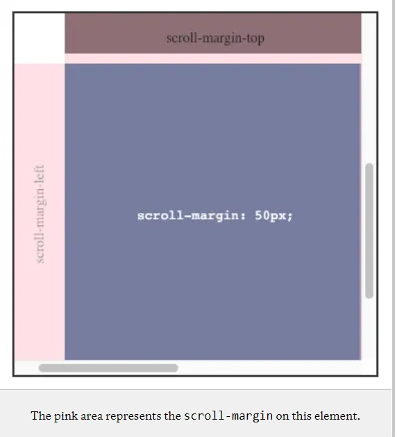

scroll-margin is used to adjust an element’s snap area (the box that defines where the element will be snapped to).
$$ -- Adding scroll-margin is useful when you need to give an element space from the edge of the container when snapped into place, but allowing for situations where each element might need slightly different spacing. If all elements have the same spacing requirements, consider using scroll-padding on the parent container instead of scroll-margin because that affects spacing for all elements within the container.scroll-margin is an optional property for any scroll-snapping container
A simple example would be using scroll-padding to create some fixed spacing of 50px at the top and left of the container:
.element {
scroll-snap-align: start;
}

/* Shorthand */
scroll-margin: length-percentage | auto;
/* Longhands */
scroll-margin-top: length-percentage | auto;
scroll-margin-right: length-percentage | auto;
scroll-margin-bottom: length-percentage | auto;
scroll-margin-left: length-percentage | auto;
/* inline-specific and block-specific properties as well */
scroll-margin-block : length-percentage | auto ;
scroll-margin-inline: length-percentage | auto ;
Heads up: It doesn't look like your browser supports scroll snapping! Check Can I use for current browser support. Maybe try opening this CodePen in a different browser, like Chrome?
Scroll slowly to "feel" the snap points.
scroll-margin:
0px;
scroll-margin:
10px;
scroll-margin:
50px;
scroll-margin: 50px
10px;